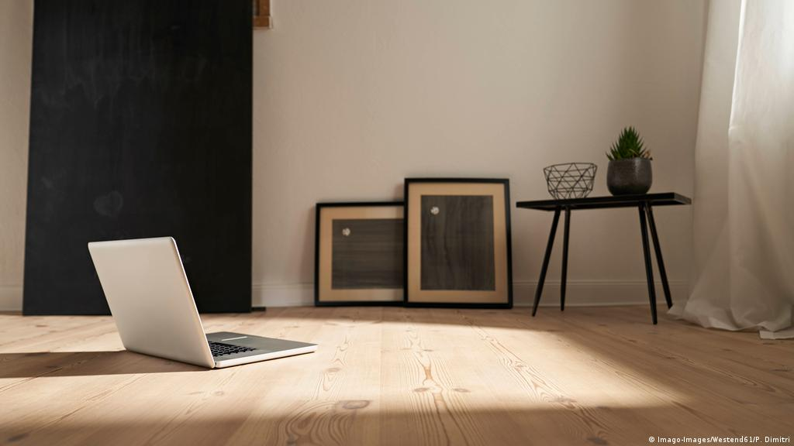

Minimalism: Economics, Politics, Science, & Technology
Multimedia Century, 1 November, 2021

Robert Morris, Untitled, 1965 reconstructed 1971
This post was done in partnership with Richard Wong, Brian Anderson, Jonathan Li, and myself in a
collaborative effort. The work of this paper was evenly distributed. My part included the introduction
and the section on politics.
Minimalism is an extreme form of abstract art that originated in New York during the early 1960s.
Minimalism was identified through the use of simple geometric shapes built on squares and rectangles and
characterized by extreme simplicity of form and a literal, objective approach. The word minimalism gained
its popularity amongst young artists interested in resisting the stifling conventions of fine art. It was
through the efforts of artists such as Agnes Martin, Donald Judd, and Frank Stella that minimalism became
the movement we know today. The idea behind their work was that a work of art should only refer to itself.
Minimalists attempted to rid their work of excess association by using hard edge and simple form as
opposed to the typical painterly approach. While minimalism sought only to refer to itself, it could not
keep itself from being influenced by the factors of its time and creating a large impact in the world
beyond itself...